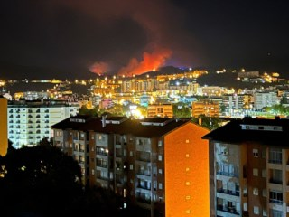

Incêndios em Coimbra
Incêndios assolam a região de Coimbra, lançando um alerta para a gravidade das condições climáticas na área. Nos últimos meses, a cidade e seus arredores têm enfrentado desafios significativos devido a incêndios que ameaçam comunidades locais, a biodiversidade e o patrimônio natural.
Com temperaturas elevadas e condições climáticas propícias à propagação rápida do fogo, a região de Coimbra está lutando contra uma série de incêndios. Esses eventos não apenas desafiam os esforços das equipes de combate a incêndios, mas também levantam preocupações sobre a necessidade de medidas preventivas mais eficazes e estratégias de gestão ambiental.
Nesta análise inicial, exploraremos a extensão dos incêndios em Coimbra, destacando os esforços das autoridades locais, bombeiros e voluntários para conter as chamas. Além disso, examinaremos as possíveis causas por trás desses incidentes e as implicações para a comunidade e o meio ambiente.
Coimbra, uma cidade histórica e pitoresca em Portugal, encontra-se sob uma ameaça urgente à medida que uma série de incêndios florestais assola a região. As chamas, alimentadas por condições climáticas desfavoráveis e ventos intensos, têm consumido vastas áreas de vegetação, ameaçando não apenas a flora local, mas também colocando em risco comunidades e infraestruturas.
Os primeiros relatos de incêndios surgiram há três dias, quando uma combinação de temperaturas extremas e baixa umidade criou o cenário propício para o desencadeamento de focos de incêndio em toda a região de Coimbra. As autoridades locais imediatamente mobilizaram equipes de combate a incêndios, mas a rápida propagação das chamas dificultou os esforços para controlar a situação.
Os bombeiros têm enfrentado condições adversas, com rajadas de vento intensas desafiando suas tentativas de conter o fogo. Helicópteros e aviões de combate a incêndios foram acionados para lançar retardantes de chama e água, visando conter o avanço das chamas em áreas de difícil acesso. No entanto, as previsões meteorológicas indicam que as condições climáticas podem continuar a desafiar esses esforços nas próximas horas.

Comentários
tojipop94 comentou a 14/02/2024:
Que incrível!
asantos04 comentou a 14/02/2024:
Que notícia triste :(
Deixa um comentário